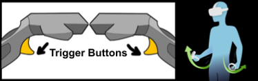

locomotion
Lynn WeynIntroduction
Locomotion techniques are required in order to travel beyond the boundaries of the physical room. Bench alignment issue locomotion must address, since there is a physical bench in the real room, but only visible virtually when the user navigates to certain points in the scene using a locomotion technique. We do not want the bench to be following around the user as they move in the virtual environment. To align exactly to certain points in the scene requires a certain level of precision in locomotion, which most techniques cannot provide without causing nausea. There are many different existing locomotion techniques, but we needed one that would be most immersive and realistic, allow for the alignment to the bench, and is not nauseating.
Locomotion alternatives implemented
Based on past research and what made sense given the context of our environment, we implemented two alternative locomotion techniques that the user can switch between.
Teleportation
To teleport, the user can press the trackpad button to span an arc from their virtual hand to where they will teleport to. When the user lets go of the top trackpad button, the screen fades out of their previous (virtual) location and fades into the location they were pointing to. This represents a change in viewpoint within the scene and thus instantaneous travel to a new location.
Arm Swinging
When the user wishes to use arm swing locomotion, they can hold down both trigger buttons and swing the remotes in order to move in their view direction.
The user cannot hold the branch (since both trigger buttons need to be pressed on the controllers) or align with the bench, due to the lack of precision arm-swinging provides.
Locomotion Matters Addressed
The Branch And Teleporting with it
 A real branch was found in
nature, modelled in Blender, and placed in the environment. The branch’s real motions are mapped to
what can be seen in the virtual environment through the use of an HTC vive tracker.
A real branch was found in
nature, modelled in Blender, and placed in the environment. The branch’s real motions are mapped to
what can be seen in the virtual environment through the use of an HTC vive tracker.
The figure
shows the real branch with the tracker (A), and the virtual branch with (B) and without (C) a
tracker placeholder object – turned off to increase immersion. This is what the user sees when
looking at the branch while wearing a VR Headset.
Teleportation uses the branch if the tracker is more than approximately 60cm above the ground, upon which the teleportation arc spans from where the branch ends to where the user will teleport. Similarly to teleportation without the branch, the arc appears when the user holds down the HTC Vive controller’s top trackpad button with their other hand, and when they let go they will teleport to where they are pointing.
Alignment to the bench
In order to align precisely
to the bench, the user can teleport to fixed teleportation markers in the scene, each placed near a
transparent bench.
Once they teleport there, the virtual bench will become opaque to indicate that the bench is
ready for sitting. When the user moves away from the bench virtually by teleporting or arm-swinging,
a transparent bench is placed there to indicate that it is no longer correctly aligned.
The figure shows the player in the real room looking towards the bench with an attached tracker(A), and what they would see if they were (B) or were not (C) aligned with the bench in the virtual world.
Room boundaries
Since there is a real bench in the physical room at all times, when not aligned with the bench the room boundaries need to be in front of it so as to prevent collision and thus potential injuries. However, after teleporting to the dedicated markers (and so aligned with the real bench), we want two things to happen: the boundaries need to extend to be behind the bench to indicate that it is now approachable, and when sitting on the bench itself, we do not want the user to be able to see the grid as it will reduce immersion. We had to make our own system to implement all this functionality.
Results, Conclusions, And Future Work
This project’s aim was to design and create a relaxing, explorative virtual nature pill that was
both interactive and immersive through the use of multiple senses. Though our three expert
evaluators had some positive feedback during heuristic evaluation, proper user testing would need to be done to see how
effective the environment is at its intentions. This environment is a good starting point, but some
changes to the intuitiveness of aligning to the real-world bench, and being able to use the branch’s
teleportation feature without the need of a second controller, would need to be looked into prior to
additional testing.
We implemented good locomotion mechanics for navigating the scene given the problems that come with
real props in the room while wearing a VR headset. We answered the research questions by looking at
literature and through design iterations. Touch was best incorporated with a bench and a branch, and
relevant nature and feedback sounds worked well in the environment.
A wide, reflective, slow flowing river with a distant waterfall were found to be an ideal balance of restorative and interesting.
Both locomotion techniques implemented had their advantages and disadvantages, with arm-swinging
being the most immersive and teleportation being less nauseating and good for alignment with
real-world objects.